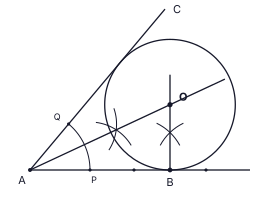
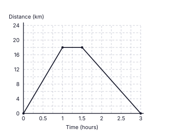
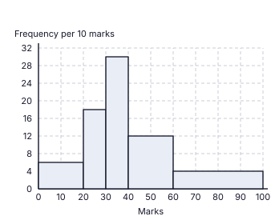
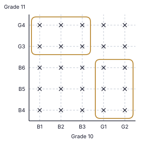

9. Angle of elevation at C is a = ACB (between CA and CB). Angle of depression at B is b = angle between the horizontal through B and BC. They are alternate angles (the horizontals are parallel). See figure.

Final answer: a = b
(Marks 2)1. Total work = 12 × 15 = 180 worker-days. Workers needed for 9 days = 180 ÷ 9 = 20. Extra workers = 20 − 12.
Final answer: 8 workers
(Marks 2)2. Through E draw a line parallel to AB (and CD). Then AÊC = BÂE + ECD (alternate angles), so BÂE = 105° − 42°.
Final answer: BÂE = 63°
(Marks 2)3. 3×3 + 5×2 − 1×412x = 9 + 10 − 412x = 1512x
Final answer: 54x
(Marks 2)4. The side faces of a right prism are rectangles, so a rhombus that is not a square cannot be a face. (A square is possible when the lateral edge equals a base edge.)
Final answer: (ii) ticked
(Marks 2)5. Students per degree = 12 ÷ 40 = 0.3. Cricket: 150° × 0.3 = 45. (or 12 × 150/40)
Final answer: 45 students
(Marks 2)6. DC is the axis through the centre and the midpoint of AB, so DC ⊥ AB and DA = DB. ADBE is cyclic, so AD̂B = 180° − 110° = 70°. DC bisects AD̂B, so CD̂B = 70° ÷ 2.
Final answer: 35°
(Marks 2)7. 3(x2 − 25) = 3(x − 5)(x + 5)
Final answer: 3(x − 5)(x + 5)
(Marks 2)8. lg 50 = lg (5 × 10) = lg 5 + lg 10 = 0.6990 + 1
Final answer: 1.6990
(Marks 2)9. Angle of elevation at C is a = ACB (between CA and CB). Angle of depression at B is b = angle between the horizontal through B and BC. They are alternate angles (the horizontals are parallel). See figure.
Final answer: a = b
(Marks 2)10. Curved surface : base = 2πr(4r) : πr2 = 8πr2 : πr2
Final answer: 8 : 1
(Marks 2)11. Total outcomes = 4 × 4 = 16. Sum 12: (4, 8), (6, 6), (8, 4) → 3 outcomes.
Final answer: 316
(Marks 2)12. DB = DC, so DB̂C = DĈB = (180° − 40°) ÷ 2 = 70°. AB̂D = 180° − 70° = 110°. AB = BD, so x = (180° − 110°) ÷ 2.
Final answer: x = 35°
(Marks 2)13. A = {1, 2, 3, 4, 6}, B = {2, 4, 6, 8, 10}. A ∩ B = {2, 4, 6} so (i) is false; A ∪ B = {1, 2, 3, 4, 6, 8, 10} so (ii) is true; A′ = {5, 7, 8, 9, 10}, n(A′) = 5 so (iii) is false.
Final answer: (ii) ticked
(Marks 2)14. 30x4y510x2y2
Final answer: 3x2y3
(Marks 2)15. Common ratio r = 6 ÷ (−12) = −12. Fifth term = 6 × r2 = 6 × 14
Final answer: 32 (1.5)
(Marks 2)16. BÂC = BD̂C = 29° (same segment). So AD̂C = 2 × 29° = 58°. CB̂E = AD̂C (exterior angle of a cyclic quadrilateral).
Final answer: 58°
(Marks 2)17. HCF of 24, 36, 60 = 12; lowest power of p is p2; lowest power of q is q.
Final answer: 12p2q
(Marks 2)18. Volume of prism = 154 × h = πr2h ⇒ r2 = 154 × 722 = 49
Final answer: r = 7 cm
(Marks 2)19. D and E are midpoints, so BD = AD = 3 and EC = AE = 5. In the right-angled triangle ADE, DE = √(52 − 32) = 4. By the midpoint theorem BC = 2 × DE = 8. Perimeter = BD + DE + EC + CB = 3 + 4 + 5 + 8.
Final answer: 20 cm
(Marks 2)20. Gradient = (5 − 3) ÷ (6 − 2) = 12. y − 3 = 12(x − 2)
Final answer: y = 12x + 2 (or x − 2y + 4 = 0)
(Marks 2)21. In a parallelogram opposite angles are equal: DÂB = BĈD = 70°. ADEB is a cyclic quadrilateral, so DÊB = 180° − 70°.
Final answer: 110°
(Marks 2)22. P × (1.05)2 = 22 050, P × 1.1025 = 22 050, P = 22 050 ÷ 1.1025
Final answer: Rs 20 000
(Marks 2)23. CB = CD (radii) so CB̂D = CD̂B = 70°. AC ∥ BD, so AĈB = CB̂D = 70° (alternate angles). The angle at the centre AĈB = 70°, so AÊB = 70° ÷ 2.
Final answer: 35°
(Marks 2)24. 4x + 15 > 3 ⇒ 4x > −12 ⇒ x > −3
Final answer: x > −3; negative integers: −2, −1
(Marks 2)25. Bisector of BÂC (complete the arcs from P and Q, join A to their intersection and produce); perpendicular to AB at B (arcs on either side of B on AB, then two arcs above); O is where they meet. See figure.

Final answer: O = intersection (OB = distance from O to AC)
(Marks 2)| (i) | |
| Fraction left after food = 1 − 15 = 45 | 1 |
| (ii) | |
| Other expenses = 58 × 45 = 12 of the money received | 1 |
| Left = 45 − 12 = 310 | 1 |
| (iii) | |
| 310 of the money received = Rs 36 000, so money received = 36 000 × 103 = Rs 120 000 | 1 |
| Food = 15 × 120 000 = Rs 24 000; other expenses = 12 × 120 000 = Rs 60 000 | 1 |
| (iv) | |
| Let the salary be Rs S. Tax = 10100 × (S − 75 000). S − 0.1(S − 75 000) = 120 000 | 1 |
| 0.9S + 7 500 = 120 000, so 0.9S = 112 500 | 1 |
| S = Rs 125 000 (check: tax = 10% of 50 000 = 5 000; 125 000 − 5 000 = 120 000) | 1 |
| (v) | |
| 24000125000 × 100 | 1 |
| = 19.2% | 1 |
Total marks: 10
| (a)(i) | |
 | |
| Horizontal line from (1, 18) to (1.5, 18) (stay of 30 minutes) | 1 |
| Point (3, 0) correctly located (return takes 1½ h, so reaches home at 3 h) | 1 |
| Straight line from (1.5, 18) to (3, 0) | 1 |
| (a)(ii) | |
| Speed = distance ÷ time = 18 ÷ 1.5 | 1 |
| = 12 km h−1 | 1 |
| (b)(i) | |
| Arc AEB = 12 × 2 × 227 × 7 = 22 cm | 1 |
| Perimeter = 22 + 33 + 14 + 33 = 102 cm | 1 |
| (b)(ii) | |
| Area of semicircle = 12 × 227 × 7 × 7 = 77 cm2 | 1 |
| Area of rectangle = 14 × 33 = 462 cm2 | 1 |
| 462 ÷ 77 = 6 times | 1 |
Total marks: 10
| (i) | |
| Rates = 10100 × 50 000 | 1 |
| = Rs 5 000 | 1 |
| (ii) | |
| Rent for the year = 12 500 × 12 = Rs 150 000; maintenance = 10% of 150 000 = Rs 15 000 | 1 |
| Money left = 150 000 − 5 000 − 15 000 = Rs 130 000 | 1 |
| (iii)(a) | |
| Dividend per share = 7.5100 × 80 = Rs 6 | 1 |
| Number of shares = 15 000 ÷ 6 | 1 |
| = 2 500 shares | 1 |
| (iii)(b) | |
| Total invested = 2 500 × 80 = Rs 200 000 | 1 |
| Extra money added = 200 000 − 130 000 = Rs 70 000 | 1 |
| Percentage = 70000200000 × 100 = 35% | 1 |
Total marks: 10
| (i) | |
| Values read from the polygon: 20 – 30 → 18; 30 – 40 → 30; 40 – 60 → 24; 60 – 100 → 16 (all four correct 3; three correct 2; two correct 1) | 3 |
| (ii) | |
| Heights (frequency per 10 marks): 20 – 30: 18 ÷ 10 × 10 = 18; 30 – 40: 30; 40 – 60: 24 ÷ 20 × 10 = 12; 60 – 100: 16 ÷ 40 × 10 = 4 (first bar: 12 ÷ 20 × 10 = 6, given) | 1 |
 | |
| Bars for 20 – 30 and 30 – 40 drawn with heights 18 and 30 | 1 |
| Bars for 40 – 60 and 60 – 100 drawn with heights 12 and 4, bar widths correct and no gaps between bars | 1 |
| (iii) | |
| Cumulative frequencies: 12, 30, 60, 84, 100 (12 + 18 = 30; 30 + 30 = 60; 60 + 24 = 84; 84 + 16 = 100) (all four correct 2; two or three correct 1) | 2 |
| (iv) | |
| Students with 40 or more = 24 + 16 = 40 (or 100 − 60) | 1 |
| Probability = 40100 = 25 | 1 |
Total marks: 10
| (i) | |
 | |
| All 25 points (5 columns × 5 rows) marked with ‘×’ at the grid intersections (24 or 25 correct: 2; at least 13 correct: 1) | 2 |
| (ii) | |
| Closed curves around the 6 outcomes (B1, B2, B3) × (G3, G4) and the 6 outcomes (G1, G2) × (B4, B5, B6); 12 outcomes in all | 2 |
| P(exactly one boy) = 1225 | 1 |
| (iii) | |
| First branches: 1225 (exactly one boy) and 1325 (both boys: 9, both girls: 4, so 13 outcomes) | 1 |
| After ‘exactly one boy’: wins 35, does not win 25 | 1 |
| After ‘both boys or both girls’: wins 25, does not win 35 | 1 |
| (iv) | |
| P(does not win) = 1225 × 25 + 1325 × 35 = 24125 + 39125 | 1 |
| = 63125 | 1 |
Total marks: 10